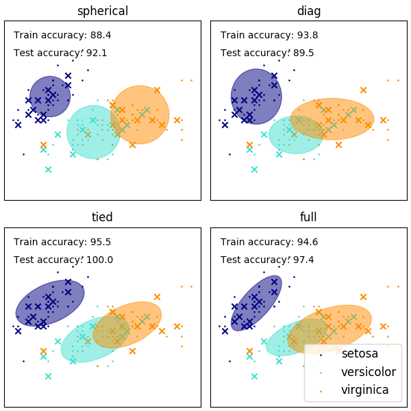

Note
Click here to download the full example code or run this example in your browser via Binder
1.20.4. GMM covariances¶
Demonstration of several covariances types for Gaussian mixture models.
See Gaussian mixture models for more information on the estimator.
Although GMM are often used for clustering, we can compare the obtained clusters with the actual classes from the dataset. We initialize the means of the Gaussians with the means of the classes from the training set to make this comparison valid.
We plot predicted labels on both training and held out test data using a variety of GMM covariance types on the iris dataset. We compare GMMs with spherical, diagonal, full, and tied covariance matrices in increasing order of performance. Although one would expect full covariance to perform best in general, it is prone to overfitting on small datasets and does not generalize well to held out test data.
On the plots, train data is shown as dots, while test data is shown as crosses. The iris dataset is four-dimensional. Only the first two dimensions are shown here, and thus some points are separated in other dimensions.
# Author: Ron Weiss <ronweiss@gmail.com>, Gael Varoquaux
# Modified by Thierry Guillemot <thierry.guillemot.work@gmail.com>
# License: BSD 3 clause
import matplotlib as mpl
import matplotlib.pyplot as plt
import numpy as np
from sklearn import datasets
from sklearn.mixture import GaussianMixture
from sklearn.model_selection import StratifiedKFold
print(__doc__)
colors = ['navy', 'turquoise', 'darkorange']
def make_ellipses(gmm, ax):
for n, color in enumerate(colors):
if gmm.covariance_type == 'full':
covariances = gmm.covariances_[n][:2, :2]
elif gmm.covariance_type == 'tied':
covariances = gmm.covariances_[:2, :2]
elif gmm.covariance_type == 'diag':
covariances = np.diag(gmm.covariances_[n][:2])
elif gmm.covariance_type == 'spherical':
covariances = np.eye(gmm.means_.shape[1]) * gmm.covariances_[n]
v, w = np.linalg.eigh(covariances)
u = w[0] / np.linalg.norm(w[0])
angle = np.arctan2(u[1], u[0])
angle = 180 * angle / np.pi # convert to degrees
v = 2. * np.sqrt(2.) * np.sqrt(v)
ell = mpl.patches.Ellipse(gmm.means_[n, :2], v[0], v[1],
180 + angle, color=color)
ell.set_clip_box(ax.bbox)
ell.set_alpha(0.5)
ax.add_artist(ell)
ax.set_aspect('equal', 'datalim')
iris = datasets.load_iris()
# Break up the dataset into non-overlapping training (75%) and testing
# (25%) sets.
skf = StratifiedKFold(n_splits=4)
# Only take the first fold.
train_index, test_index = next(iter(skf.split(iris.data, iris.target)))
X_train = iris.data[train_index]
y_train = iris.target[train_index]
X_test = iris.data[test_index]
y_test = iris.target[test_index]
n_classes = len(np.unique(y_train))
# Try GMMs using different types of covariances.
estimators = {cov_type: GaussianMixture(n_components=n_classes,
covariance_type=cov_type, max_iter=20, random_state=0)
for cov_type in ['spherical', 'diag', 'tied', 'full']}
n_estimators = len(estimators)
plt.figure(figsize=(3 * n_estimators // 2, 6))
plt.subplots_adjust(bottom=.01, top=0.95, hspace=.15, wspace=.05,
left=.01, right=.99)
for index, (name, estimator) in enumerate(estimators.items()):
# Since we have class labels for the training data, we can
# initialize the GMM parameters in a supervised manner.
estimator.means_init = np.array([X_train[y_train == i].mean(axis=0)
for i in range(n_classes)])
# Train the other parameters using the EM algorithm.
estimator.fit(X_train)
h = plt.subplot(2, n_estimators // 2, index + 1)
make_ellipses(estimator, h)
for n, color in enumerate(colors):
data = iris.data[iris.target == n]
plt.scatter(data[:, 0], data[:, 1], s=0.8, color=color,
label=iris.target_names[n])
# Plot the test data with crosses
for n, color in enumerate(colors):
data = X_test[y_test == n]
plt.scatter(data[:, 0], data[:, 1], marker='x', color=color)
y_train_pred = estimator.predict(X_train)
train_accuracy = np.mean(y_train_pred.ravel() == y_train.ravel()) * 100
plt.text(0.05, 0.9, 'Train accuracy: %.1f' % train_accuracy,
transform=h.transAxes)
y_test_pred = estimator.predict(X_test)
test_accuracy = np.mean(y_test_pred.ravel() == y_test.ravel()) * 100
plt.text(0.05, 0.8, 'Test accuracy: %.1f' % test_accuracy,
transform=h.transAxes)
plt.xticks(())
plt.yticks(())
plt.title(name)
plt.legend(scatterpoints=1, loc='lower right', prop=dict(size=12))
plt.show()
Total running time of the script: ( 0 minutes 0.226 seconds)